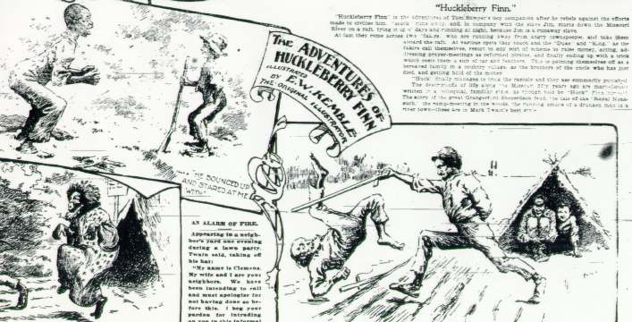

In its 10 December 1899 issue, the World did a multi-page tribute to MT, which included a full-page spread depicting his most famous characters and books. The drawings were specially commissioned, and the paper turned to Kemble to do the illustrations for Huck as a matter of course. Here is his response. [It's also worth reading the brief summary of the novel, to note that Jim's fate as a human being is not treated any more seriously there.]
